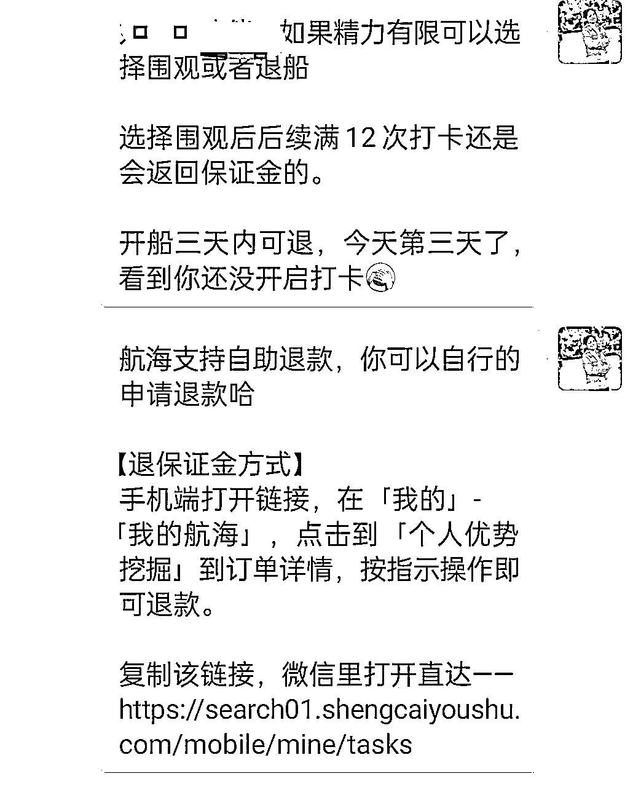
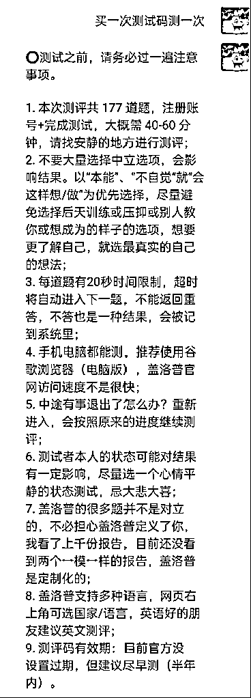
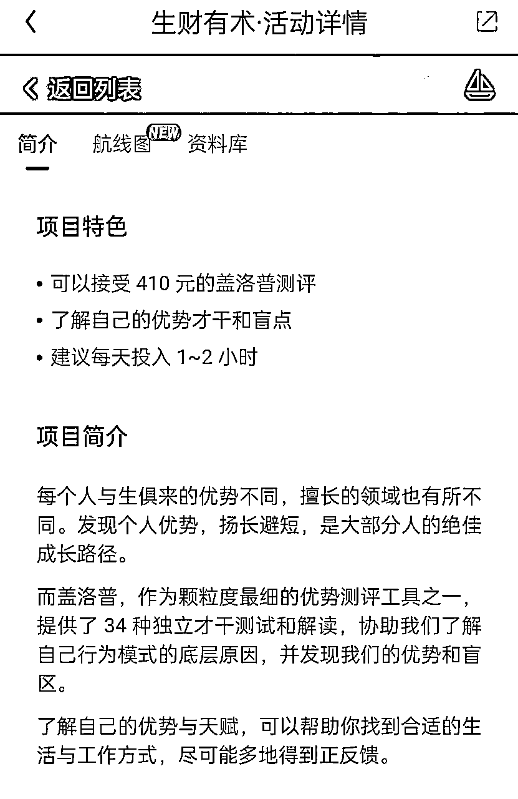
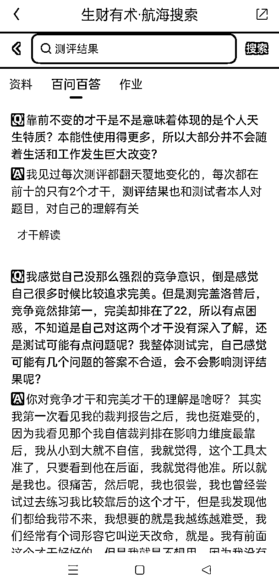

来源：https://gw63spnsu4.feishu.cn/docx/NDoEdamHVoEM7bxzmk1clAAlnze
各位圈友们大家好，
我是陈艳，今年开始连续做了3次志愿者。
今天想分享一下如何快速上手志愿者工作少走弯路。
自己在加入志愿者队伍前，对“神秘”的生财志愿者充满了好奇，想加入又担心自己是否能胜任。
有幸加入志愿者后，开启了探索之旅，被这充满积极能量的组织所吸引，也梳理了在志愿者经历中的所见所思，为8月航海画上一个圆满的句号，也为开启下次航海志愿者工作做好迭代，主要针对如下三个点，希望对大家开展志愿者工作有所启发：
1、航海三表来助力：船员基础信息统计表、航海目标及需求调研表和 航海志愿者任务检查清单
2、航海中志愿者会碰到的高频问题
3、航海小技巧
运用三表遇事不慌，三表内容结合航海志愿者手册及优秀志愿者的分享后，结合自己三次参与自愿者后，自己做了合适自己操作习惯的表格，目的是为了更好地做好开船迎接船员和后续开船过程中志愿者工作的跟进和落实，更好地有效地陪伴船员上岸。
1.1.1 目的是了解船员的基本信息，帮助志愿者更好地完成邀请船员进群的工作任务及对船员的打卡目标和次数汇总，有效地去提醒打卡及协助船员上岸。
1.1.2 生财航海人员基础信息统计表参考模板，第一行对相关内容做了说明，可以直接复制模板进行编辑使用。
1.2.1 目的是为了更顺畅地和船员在21天的航海中交流，协助对方完成打卡和拿到阶段性成果，有所得有所获。
1.2.2 调研模板可复制后生成自己的模板，同时可以加上具体航海项目名称，及特定项目需要的特殊要求。实战类航海，可以把航海目标设定成具体数字指标。
1.2.3 调研表可以在开船前完成即可，或者在邀请船员上船进群后，直接邀请对方填写。
1.2.4 话术：
开船前想邀请您做一个航海小调研
关于您的航海目标，提醒打卡频次及可交流的时间段等航海相关内容
我们一起争取圆满完成此次航行，一起生财有术
知道您在忙，所以不敢发太多信息打扰，填写完成后记得回个消息哈，感谢
直接点击链接参与
https://www.wjx.cn/vm/rmuVX4W.aspx#
1.3.1 目的是清晰了解航海志愿者工作需要交付哪些结果，哪些注意点，记录执行任务时下次可优化的点等等
1.3.2 航海志愿者任务检查清单模板可复制后，进行调整成喜欢的模式
1、可以选择非星球微信号参与航海，并需要提供相应加入船员生财有术信息编号截图即可
2、进微信大小群，只能进一个微信号
可以先建群后等领队发统一模板，或者自己有经验的可以先写一个
1、检查一下申请好友时，是否表明自己志愿者身份及加好友的目的
2、先尝试多加2次，未通过可选择短信联系，知识星球向对方留言，或者打电话联系，也可以寻找领队和鱼丸等生财工作人员帮助
3、很多船员相对比较忙，可以适当在拉长一些提醒时间，避免过于频繁。
话术：
a) 知道您这边在忙，不过多打扰您，您这边添加后，回个消息哈，在邀请您进航海群前需要一起了解一下航海的流程和注意事项。
b）对方答应后，未添加，可以等半天或者第二天再提醒对方。航海即将在明天开船，想再次确认一下您这边是否参与此次航海，还是我这边后台帮您标注围观或者操作退出此次航海呢？还请抽空回复我一下，感谢支持。
1、自己的账号有问题，也可能对方账号有风险，可以稍微等等在邀请进群。
2、邀请船员时，分批分时间段少量邀请，避免账号出现风险
3、新微信号加好友，更容易出现此类情况，新号需要养养号
1、关于航海开船前的流程无论新老船员都需要一起走一遍流程，对齐航海信息及避免后续可能产生的不必要的摩擦
2、话术：了解老船员都已经非常熟悉航海的流程啦，后续开船后也期待您多多积极参与，带动一下氛围哈。也去您这边帮忙个小忙，每一期航海流程无论新老船员都需要一起走一遍航海流程，对齐一下信息，所以我们一起快速走完后，邀请您进大小圈哈，谢谢配合。
多出来的1个是志愿者自己
1、围观在志愿者后台及时备注，告知领队。后台标注“无需提醒”备注船员围观
2、围观的船员，看对方在航海过程中的表现，可以适当的提醒对方，围观打卡满12次还是全额退还保证金哦。
3、船员围观的话，我们志愿者也不需要“催打卡提醒”
私信船员，并提供退款链接，一般船员都会回复及反馈的
话术：
xxx伙伴，如果精力有限可以选择围观或者退船
选择围观后后续满12次打卡还是会返回保证金的。
开船三天内可退，今天第三天了，看到你还没开启打卡[捂脸]
航海支持自助退款，你可以自行的申请退款哈
【退保证金方式】
手机端打开链接，在「我的」-「我的航海」，点击到「个人优势挖掘」到订单详情，按指示操作即可退款。
复制该链接，微信里打开直达—— (放上对应退款链接)https://search01.shengcaiyoushu.com/mobile/mine/tasks

1、如果此船员直接退出，没加入航海微信群，直接可忽略
2、如果此船员已加入航海微信群，需要请船员自行退出航海群。
话术：
你好，
生财志愿者后台显示您这边已退出此次航海
还请动动您发财的手指，抽空退出一下大小群，感谢。
如果对方可能没注意到，可以再次提醒对方一下。
目前航海手册只能电脑或者手机登录生财有术查阅，没有可打印版本。
1、结合船员打卡内容及志愿者后台先查阅对方是否参与了多条航海船，做个预判是否精力不够引起的？
2、或者此次航海和对方的预期存在差异或者对方本职工作相对比较忙，没时间，需了解相关信息，才能更好助力对方顺利上岸
3、再次强调水日志不记录打卡次数，需要满足航海要求的日志12篇以上才会退回保证金
在邀请船员中个人优势挖掘会涉及到，需要了解船员是否有盖洛普的测评报告环节，如下会涉及到没有报告的船员一些问题。
没有测评报告是可以看航海手册参与，但是个人优势挖掘主要是基于盖洛普测评报告开展，通过测评报告能更好地深入了解自己。
可以分享1~2篇往期优秀的打卡日志及航海手册和高手分享
让船员更好地了解打卡模式及航海的内容，自行做判断
一次测试码用一次，提醒对方测试注意事项
⭕️测试之前，请务必过一遍注意事项。
1. 本次测评共 177 道题，注册账号+完成测试，大概需 40-60 分钟，请找安静的地方进行测评；
2. 不要大量选择中立选项，会影响结果。以“本能”、"不自觉“就“会这样想/做”为优先选择，尽量避免选择后天训练或压抑或别人教你或想成为的样子的选项，想要更了解自己，就选最真实的自己的想法；
3. 每道题有20秒时间限制，超时将自动进入下一题，不能返回重答，不答也是一种结果，会被记到系统里；
4. 手机电脑都能测，推荐使用谷歌浏览器（电脑版），盖洛普官网访问速度不是很快；
5. 中途有事退出了怎么办？重新进入，会按照原来的进度继续测评；
6. 测试者本人的状态可能对结果有一定影响，尽量选一个心情平静的状态测试，忌大悲大喜；
7. 盖洛普的很多题并不是对立的，不必担心盖洛普定义了你，我看了上千份报告，目前还没看到两个一模一样的报告，盖洛普是定制化的；
8. 盖洛普支持多种语言，网页右上角可选国家/语言，英语好的朋友建议英文测评；
9. 测评码有效期：目前官方没设置过期，但建议尽早测（半年内）。

反馈需要单独付费，可以分享如下图

1、有的船员了解盖洛普优势测评，即使开船前没有报告，也知道怎么去购买
2、有的船员是第一次听说，开船后也不知道怎么测评，针对这种情况展开说一下
航海的优势大群都会有专门对应的航海教练负责，志愿者提前加教练好友，以便及时把教练名片推送给船员。
提醒船员在申请好友时，加上参与个人优势挖掘的XXX，需要购买优势测评码。
分享测试前注意事项。
1、志愿者可以把相应的关键词在航海资料中搜索，把一些信息分享给船员
2、引导船员去优势大群举手提问

每一次航海志愿者大群是宝藏，怎么用呢？
1、加入后先看志愿者群的群公告，群公告中内容及链接非常重要，会有最新航海SOP，邀请人员需要用最新版本的。
2、定期去看看群内的讨论，会有意外惊喜，因为当天讨论的内容，很多都是和当天需要做的志愿者工作有关，或许他们碰到的问题，也可能是你碰到的。
3、有问题先群内搜一下关键词，看看其他志愿者有提问过吗，没有再举手提问
善用搜索，大多数问题都已经都已涵盖了。
如果觉得志愿者大群信息太多，可以在一个领队的志愿者小群提问，新志愿者可以基于领队分享的todo 清单，把每天目标先完成，遇到问题多问就行啦。
1、邀请的船员需要做好备注，最好是带统一符号、图形等目的是：
在开船前需要核实大群船员昵称修改情况，是否加入大小群，如果有可识别性高的符号，相对省力。
在航海大群中也对自己组的船员识别度高。
2、一般有3天时间邀请船员，可分段邀请他们，避免集中邀请引起Feng 号
邀请时把对应的人员信息从志愿者后台复制到个人微信对话框
可以用手机发好友申请，电脑来完成航海流程
感谢大家的阅读，个人经验有限，涉及到航海内容如有不当和错误之处，还请指出。
每一期航海都会有新的迭代，如志愿者过程中碰到问题，及时和领队、鱼丸及生财相关工作人员反馈及咨询。
非常感谢优秀的船员们、领队们、志愿者们、教练们和生财工作人员让我抄了很多作业，感恩生财有术，遇见了优秀的大家，看见了很多新的可能性。
一起在生财之路上，互相学习，共同进步，生财有术。